Flow_Cytometry_part_II
Flow Cytometry part II
Source: Flow_Cytometry_part_II.pptx
This document contains 71 slides. Each slide is preserved as an image, followed by searchable text extracted from the presentation.
Slide 1 — Practical
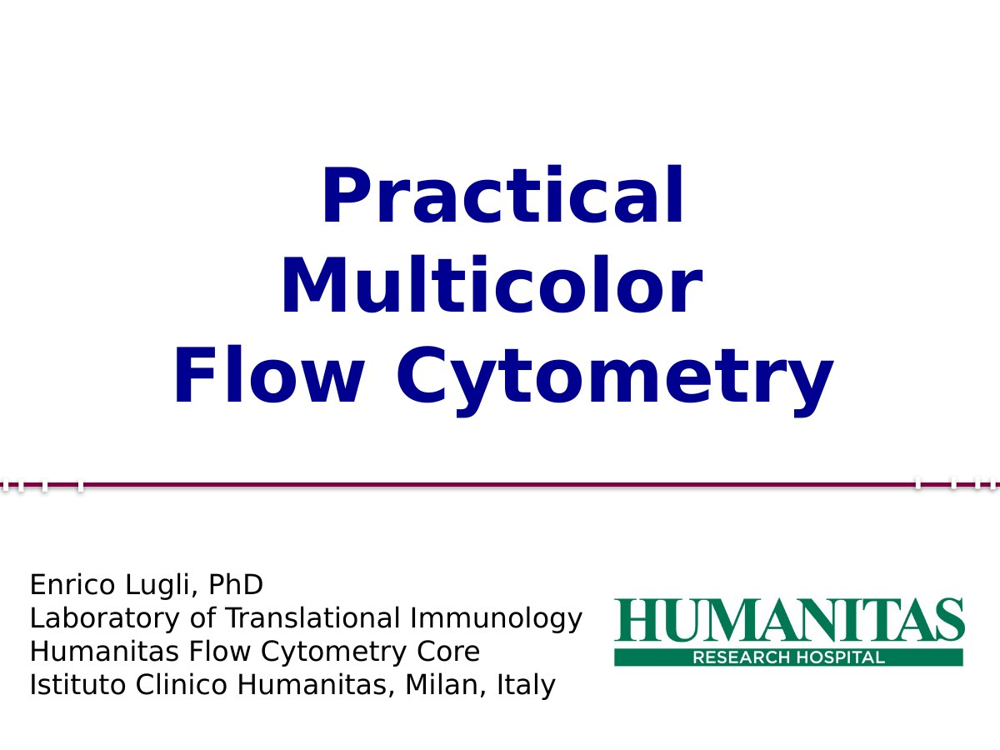
Extracted slide text
Practical
Multicolor
Flow Cytometry
Enrico Lugli, PhD
Laboratory of Translational Immunology
Humanitas Flow Cytometry Core
Istituto Clinico Humanitas, Milan, Italy
Slide 2 — The Humanitas Flow Cytometry
Extracted slide text
The Humanitas Flow Cytometry
Core
Enrico Lugli Achille Anselmo Federico Colombo
Head Technologist, specialist
Cell sorting specialist
Principal Investigator
Slide 3 — How to avoid artifacts in flow
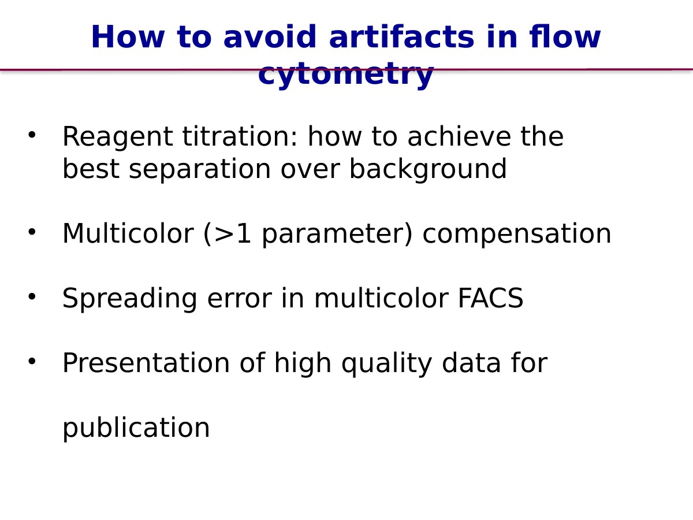
Extracted slide text
How to avoid artifacts in flow
cytometry
• Reagent titration: how to achieve the
best separation over background
• Multicolor (>1 parameter) compensation
• Spreading error in multicolor FACS
• Presentation of high quality data for
publication
Slide 4 — Abs: not just the manufacturer’s
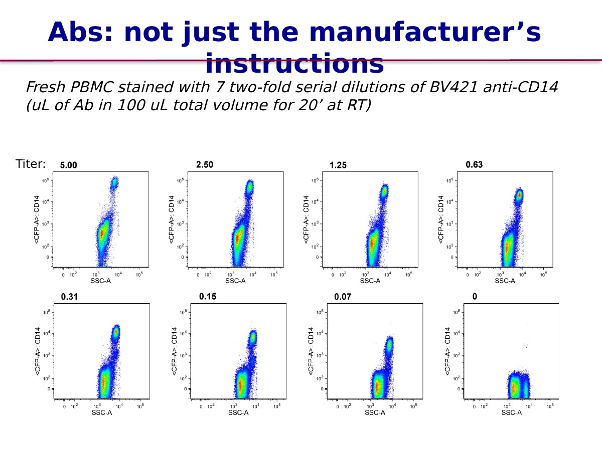
Extracted slide text
Abs: not just the manufacturer’s
instructions
Fresh PBMC stained with 7 two-fold serial dilutions of BV421 anti-CD14
(uL of Ab in 100 uL total volume for 20’ at RT)
Titer:
Slide 5 — Abs: not just the manufacturer’s
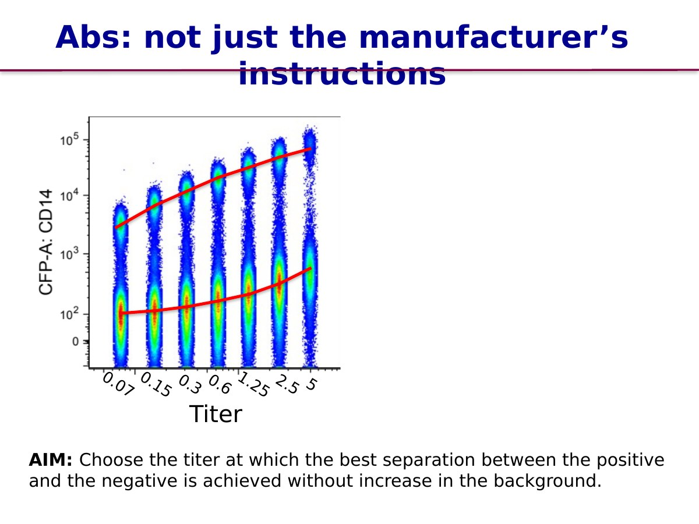
Extracted slide text
Abs: not just the manufacturer’s
instructions
0. 0 1
07 .15 0.3 0.6 .25 2.5 5
Titer
AIM: Choose the titer at which the best separation between the positive
and the negative is achieved without increase in the background.
Slide 6 — Abs: not just the manufacturer’s
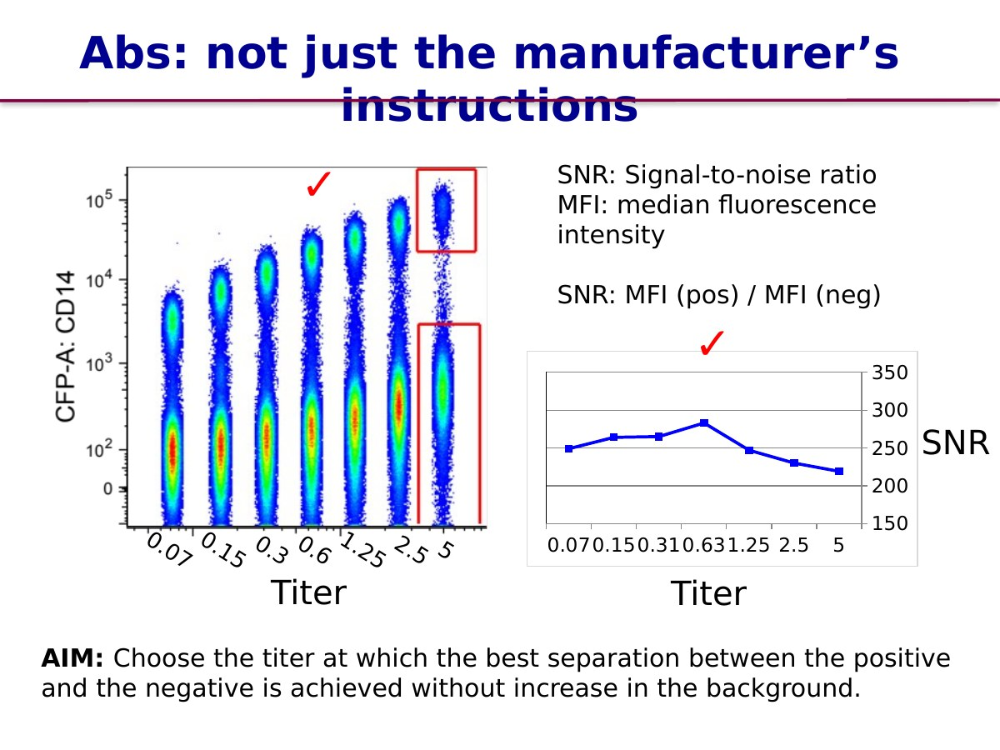
Extracted slide text
Abs: not just the manufacturer’s
instructions
✓ SNR: Signal-to-noise ratio
MFI: median fluorescence
intensity
SNR: MFI (pos) / MFI (neg)
✓ 350
300
250 SNR
200
150
0. 0 1
07 .15 0.3 0.6 .25 2.5 5 0.07 0.15 0.31 0.63 1.25 2.5 5
Titer Titer
AIM: Choose the titer at which the best separation between the positive
and the negative is achieved without increase in the background.
Slide 7 — Abs: not just the manufacturer’s
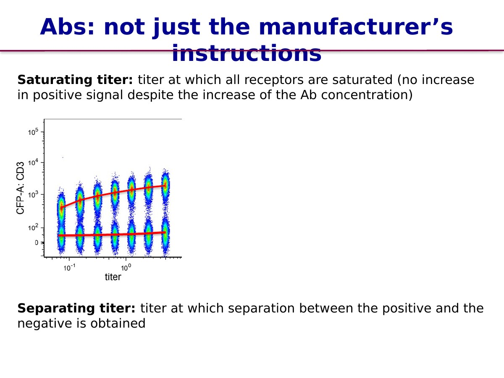
Extracted slide text
Abs: not just the manufacturer’s
instructions
Saturating titer: titer at which all receptors are saturated (no increase
in positive signal despite the increase of the Ab concentration)
Separating titer: titer at which separation between the positive and the
negative is obtained
Slide 8 — Titering antibodies: procedure
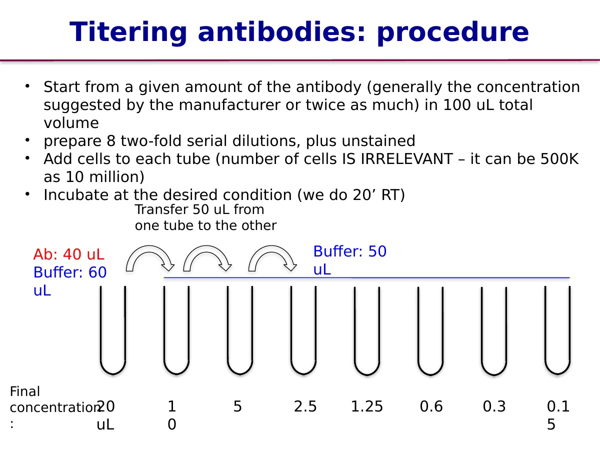
Extracted slide text
Titering antibodies: procedure
• Start from a given amount of the antibody (generally the concentration
suggested by the manufacturer or twice as much) in 100 uL total
volume
• prepare 8 two-fold serial dilutions, plus unstained
• Add cells to each tube (number of cells IS IRRELEVANT – it can be 500K
as 10 million)
• Incubate at the desired condition (we do 20’ RT)
Transfer 50 uL from
one tube to the other
Ab: 40 uL Buffer: 50
Buffer: 60 uL
uL
Final
concentration20 1 5 2.5 1.25 0.6 0.3 0.1
: uL 0 5
Slide 9 — Careful with BV dyes
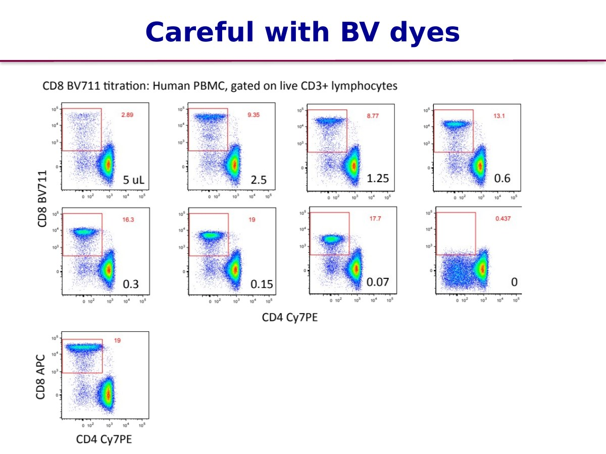
Extracted slide text
Careful with BV dyes
Slide 10 — Critical parameters affecting
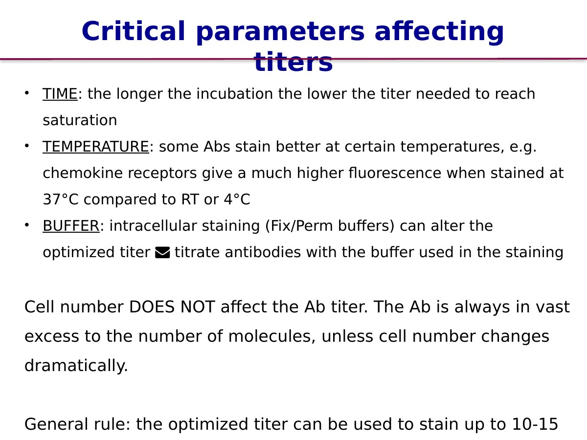
Extracted slide text
Critical parameters affecting
titers
• TIME: the longer the incubation the lower the titer needed to reach
saturation
• TEMPERATURE: some Abs stain better at certain temperatures, e.g.
chemokine receptors give a much higher fluorescence when stained at
37°C compared to RT or 4°C
• BUFFER: intracellular staining (Fix/Perm buffers) can alter the
optimized titer titrate antibodies with the buffer used in the staining
Cell number DOES NOT affect the Ab titer. The Ab is always in vast
excess to the number of molecules, unless cell number changes
dramatically.
General rule: the optimized titer can be used to stain up to 10-15
Slide 11 — Pro and cons of antibody
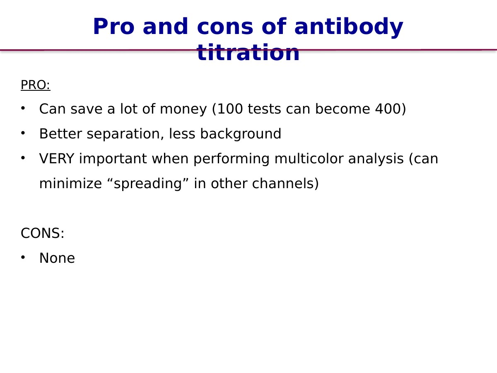
Extracted slide text
Pro and cons of antibody
titration
PRO:
• Can save a lot of money (100 tests can become 400)
• Better separation, less background
• VERY important when performing multicolor analysis (can
minimize “spreading” in other channels)
CONS:
• None
Slide 12 — Optimized voltage
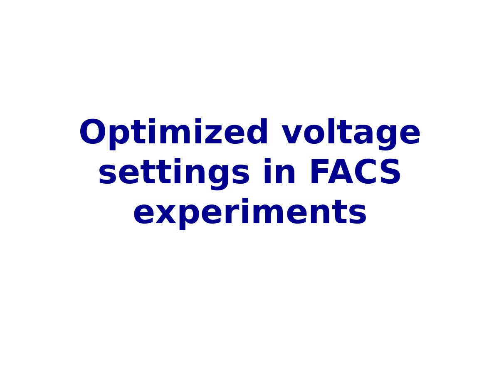
Extracted slide text
Optimized voltage settings in FACS experiments
Slide 13 — Voltage calibration
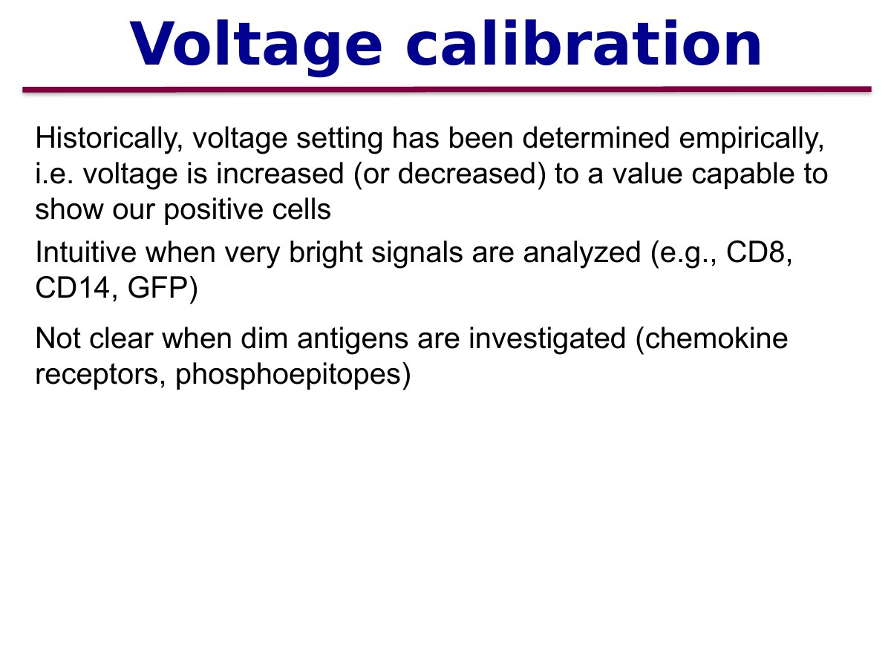
Extracted slide text
Voltage calibration Historically, voltage setting has been determined empirically, i.e. voltage is increased (or decreased) to a value capable to show our positive cells Intuitive when very bright signals are analyzed (e.g., CD8, CD14, GFP) Not clear when dim antigens are investigated (chemokine receptors, phosphoepitopes)
Slide 14 — Voltage calibration
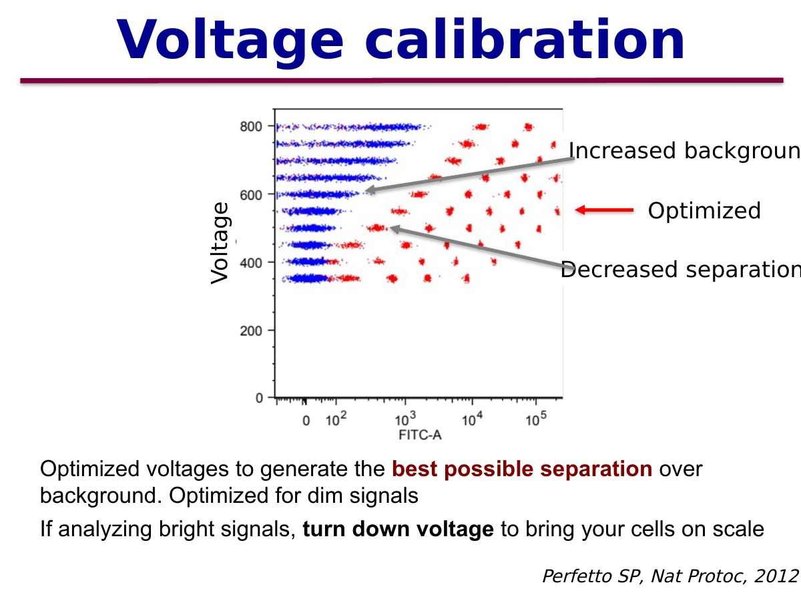
Extracted slide text
Voltage calibration
Increased backgroun
Voltage Optimized
Decreased separation
Optimized voltages to generate the best possible separation over
background. Optimized for dim signals
If analyzing bright signals, turn down voltage to bring your cells on scale
Perfetto SP, Nat Protoc, 2012
Slide 15 — Fluorescence
Extracted slide text
Fluorescence Compensation
Slide 16 — Compensation
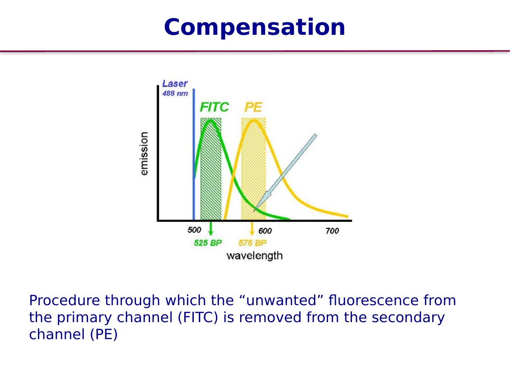
Extracted slide text
Compensation Procedure through which the “unwanted” fluorescence from the primary channel (FITC) is removed from the secondary channel (PE)
Slide 17 — Compensation: just linear
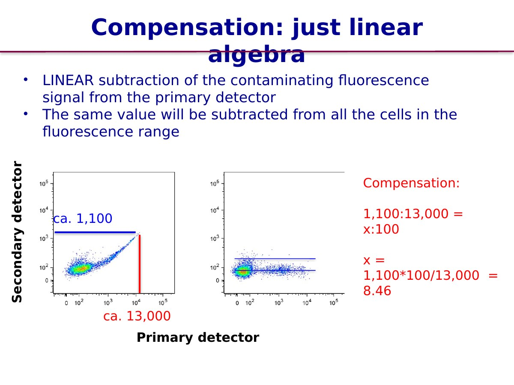
Extracted slide text
Compensation: just linear
algebra
• LINEAR subtraction of the contaminating fluorescence
signal from the primary detector
• The same value will be subtracted from all the cells in the
fluorescence range
Secondary detector
Compensation:
ca. 1,100 1,100:13,000 =
x:100
x=
1,100*100/13,000 =
8.46
ca. 13,000
Primary detector
Slide 18 — Is this correctly compensated?
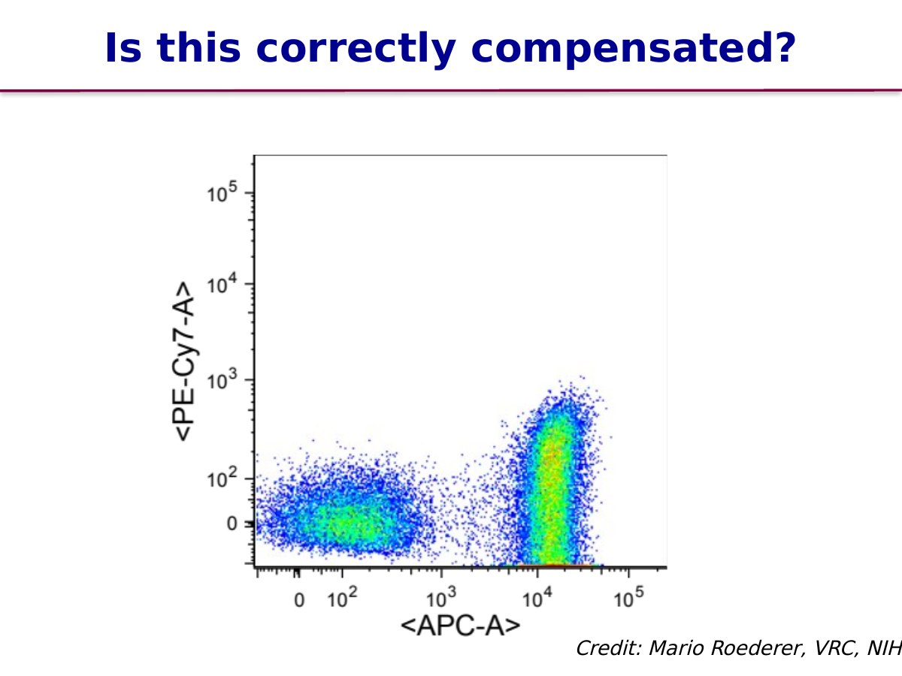
Extracted slide text
Is this correctly compensated?
Credit: Mario Roederer, VRC, NIH
Slide 19 — Aspects to consider
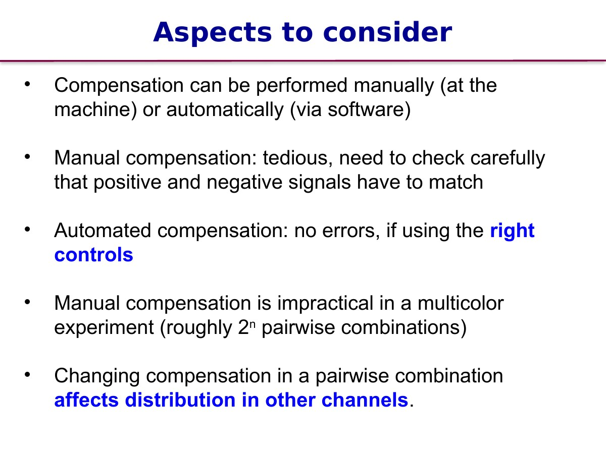
Extracted slide text
Aspects to consider
• Compensation can be performed manually (at the
machine) or automatically (via software)
• Manual compensation: tedious, need to check carefully
that positive and negative signals have to match
• Automated compensation: no errors, if using the right
controls
• Manual compensation is impractical in a multicolor
experiment (roughly 2n pairwise combinations)
• Changing compensation in a pairwise combination
affects distribution in other channels.
Slide 20 — Practical compensation
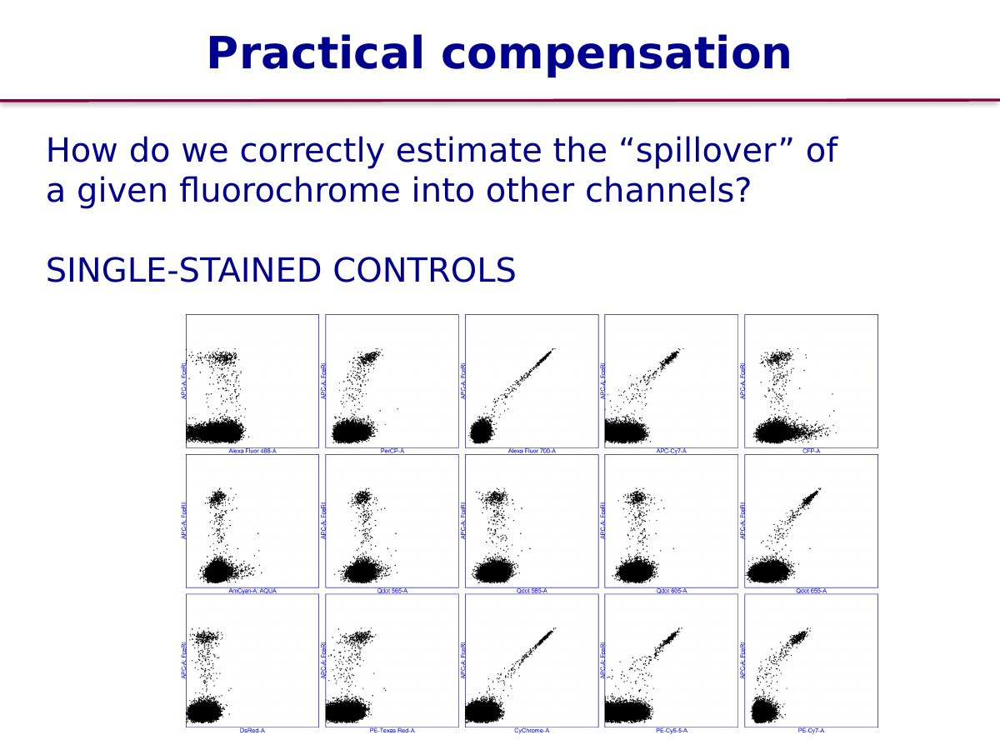
Extracted slide text
Practical compensation How do we correctly estimate the “spillover” of a given fluorochrome into other channels? SINGLE-STAINED CONTROLS
Slide 21 — Compbeads for single stained
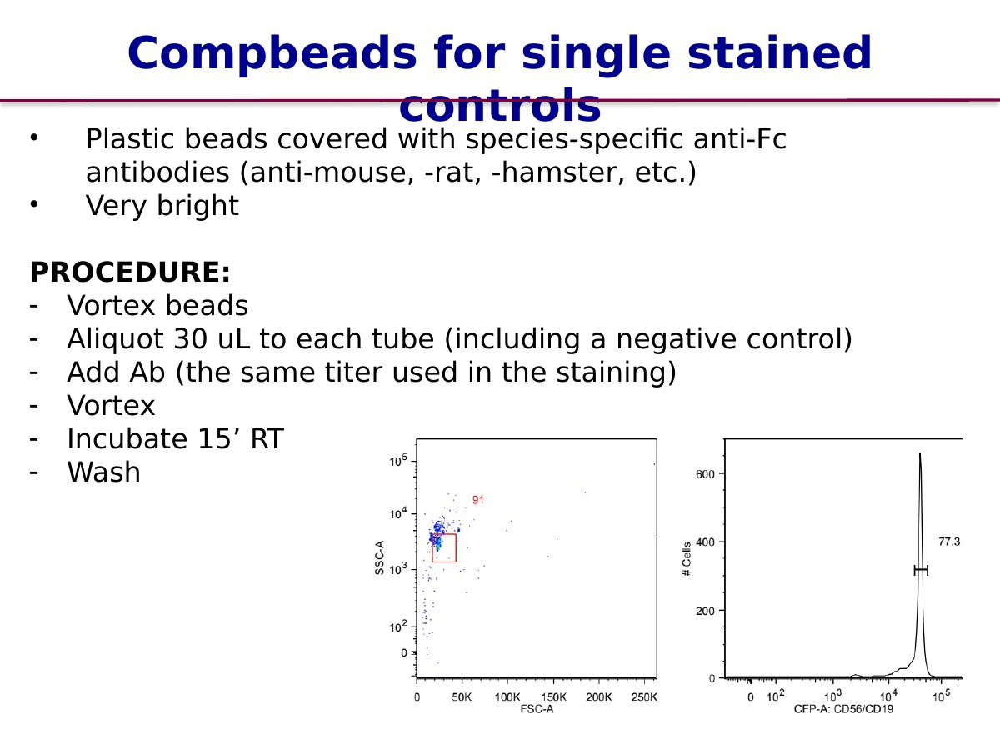
Extracted slide text
Compbeads for single stained
controls
• Plastic beads covered with species-specific anti-Fc
antibodies (anti-mouse, -rat, -hamster, etc.)
• Very bright
PROCEDURE:
- Vortex beads
- Aliquot 30 uL to each tube (including a negative control)
- Add Ab (the same titer used in the staining)
- Vortex
- Incubate 15’ RT
- Wash
Slide 22 — Minimizing compensation
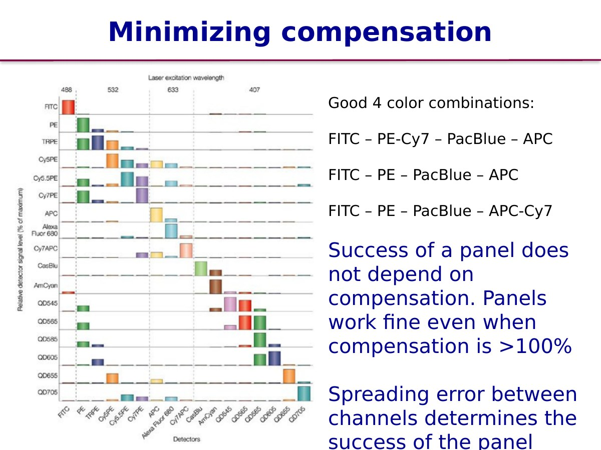
Extracted slide text
Minimizing compensation
Good 4 color combinations:
FITC – PE-Cy7 – PacBlue – APC
FITC – PE – PacBlue – APC
FITC – PE – PacBlue – APC-Cy7
Success of a panel does
not depend on
compensation. Panels
work fine even when
compensation is >100%
Spreading error between
channels determines the
success of the panel
Slide 23 — The 3 golden rules of
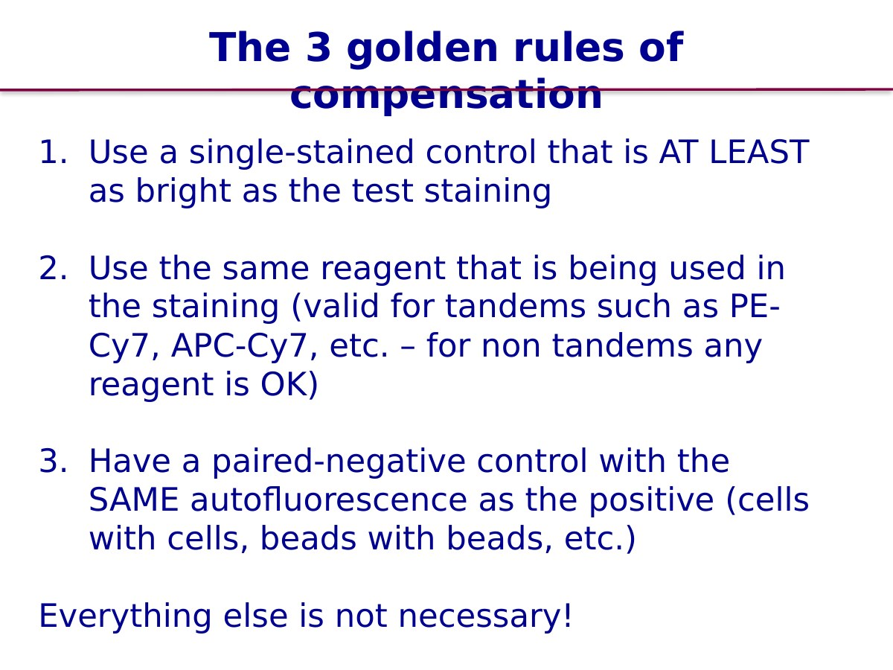
Extracted slide text
The 3 golden rules of
compensation
1. Use a single-stained control that is AT LEAST
as bright as the test staining
2. Use the same reagent that is being used in
the staining (valid for tandems such as PE-
Cy7, APC-Cy7, etc. – for non tandems any
reagent is OK)
3. Have a paired-negative control with the
SAME autofluorescence as the positive (cells
with cells, beads with beads, etc.)
Everything else is not necessary!
Slide 24 — Experiment plan
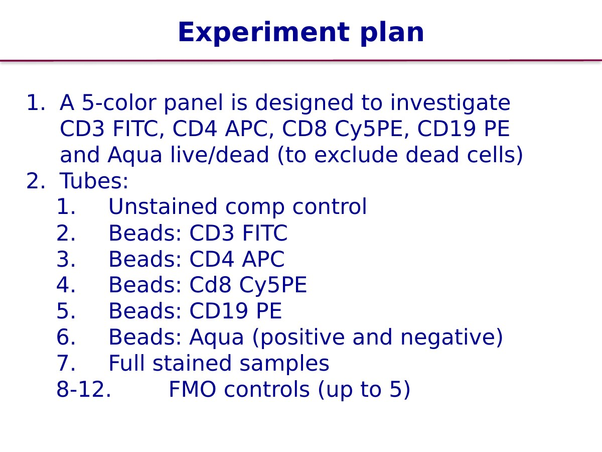
Extracted slide text
Experiment plan 1. A 5-color panel is designed to investigate CD3 FITC, CD4 APC, CD8 Cy5PE, CD19 PE and Aqua live/dead (to exclude dead cells) 2. Tubes: 1. Unstained comp control 2. Beads: CD3 FITC 3. Beads: CD4 APC 4. Beads: Cd8 Cy5PE 5. Beads: CD19 PE 6. Beads: Aqua (positive and negative) 7. Full stained samples 8-12. FMO controls (up to 5)
Slide 25 — Rule 1: at least as bright!
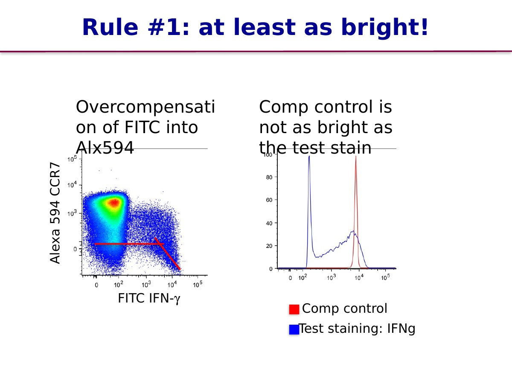
Extracted slide text
Rule #1: at least as bright!
Overcompensati Comp control is
on of FITC into not as bright as
Alx594 the test stain
Alexa 594 CCR7
FITC IFN-g
Comp control
Test staining: IFNg
Slide 26 — How to accomplish Rule 1?
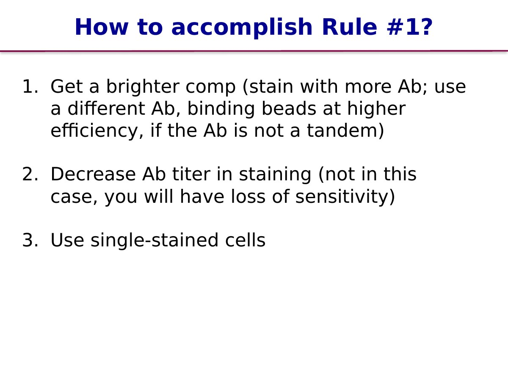
Extracted slide text
How to accomplish Rule #1? 1. Get a brighter comp (stain with more Ab; use a different Ab, binding beads at higher efficiency, if the Ab is not a tandem) 2. Decrease Ab titer in staining (not in this case, you will have loss of sensitivity) 3. Use single-stained cells
Slide 27 — Rule 2: different Abs
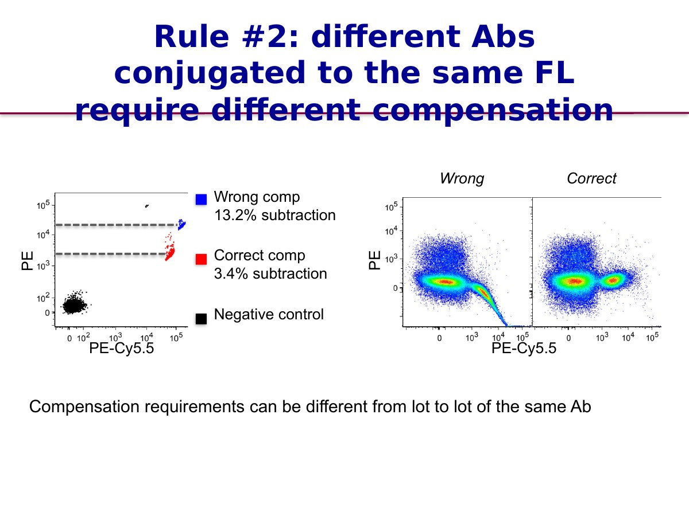
Extracted slide text
Rule #2: different Abs
conjugated to the same FL
require different compensation
Wrong Correct
Wrong comp
13.2% subtraction
Correct comp
PE
PE
3.4% subtraction
Negative control
PE-Cy5.5 PE-Cy5.5
Compensation requirements can be different from lot to lot of the same Ab
Slide 28 — Changing compensation affects
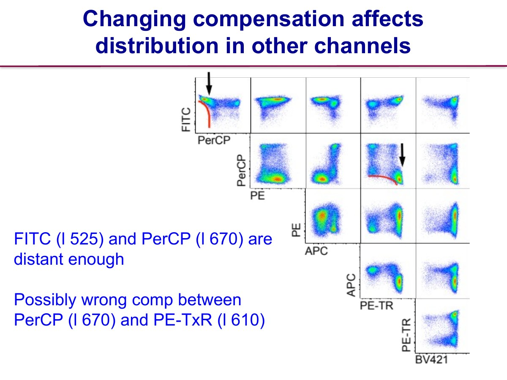
Extracted slide text
Changing compensation affects
distribution in other channels
FITC (l 525) and PerCP (l 670) are
distant enough
Possibly wrong comp between
PerCP (l 670) and PE-TxR (l 610)
Slide 29 — How to compensate in FACSDiva
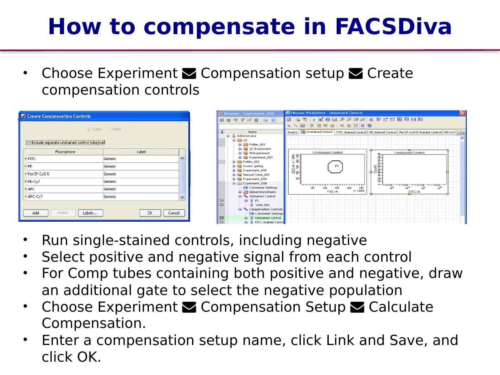
Extracted slide text
How to compensate in FACSDiva • Choose Experiment Compensation setup Create compensation controls • Run single-stained controls, including negative • Select positive and negative signal from each control • For Comp tubes containing both positive and negative, draw an additional gate to select the negative population • Choose Experiment Compensation Setup Calculate Compensation. • Enter a compensation setup name, click Link and Save, and click OK.
Slide 30 — Spreading error in
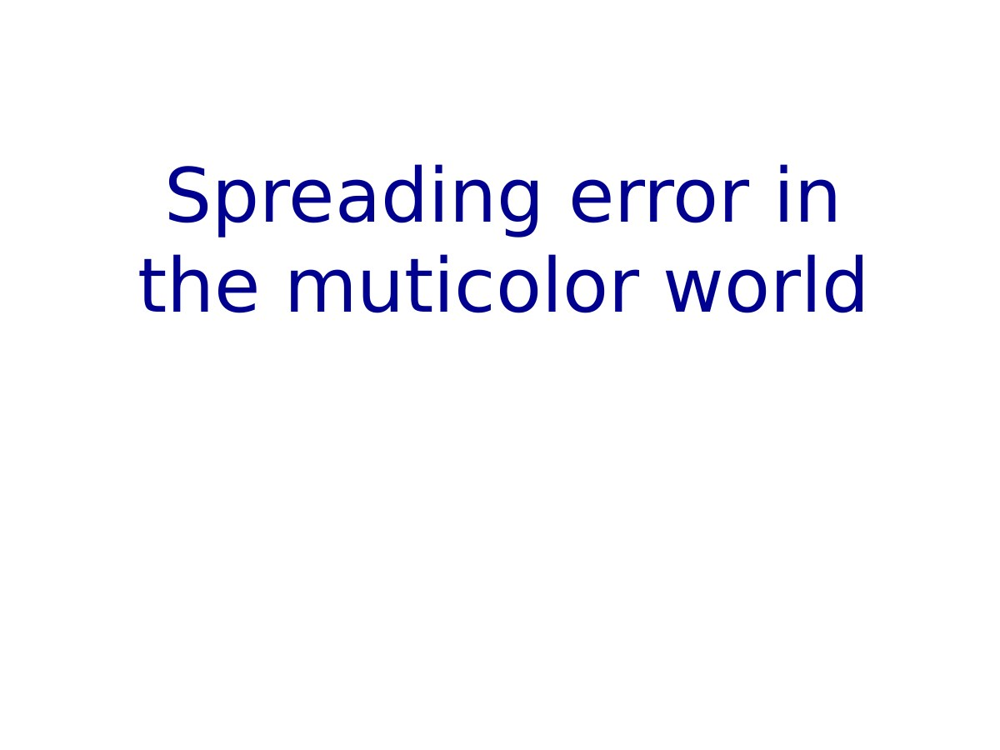
Extracted slide text
Spreading error in the muticolor world
Slide 31 — Signal spreading
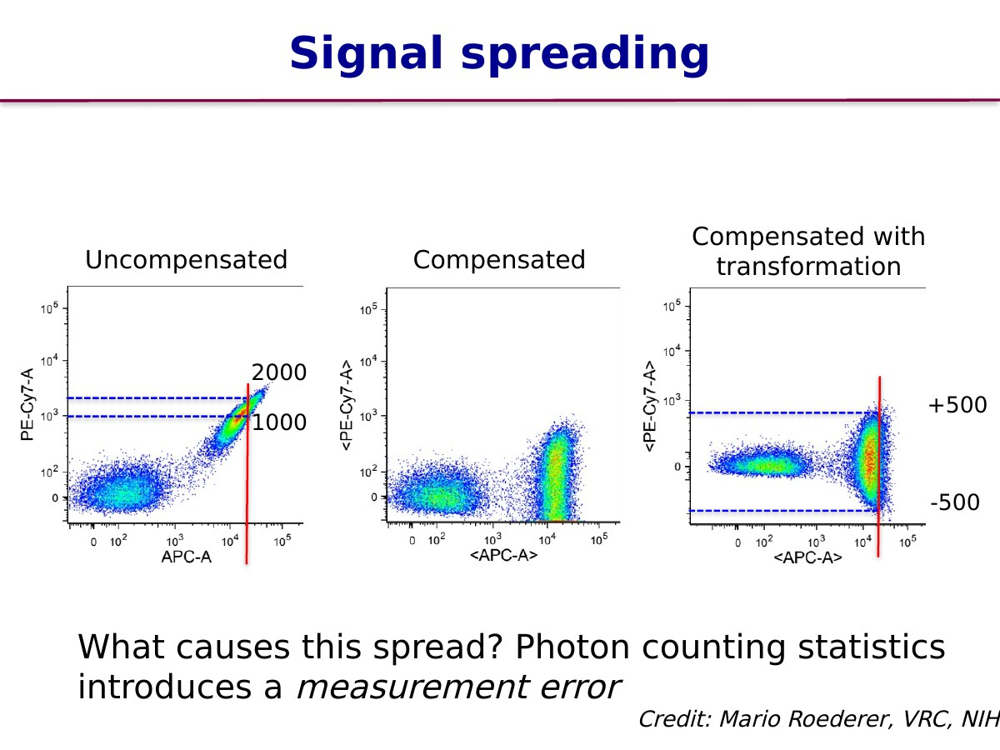
Extracted slide text
Signal spreading
Compensated with
Uncompensated Compensated transformation
2000
+500
1000
-500
What causes this spread? Photon counting statistics
introduces a measurement error
Credit: Mario Roederer, VRC, NIH
Slide 32 — “Errors” in compensation
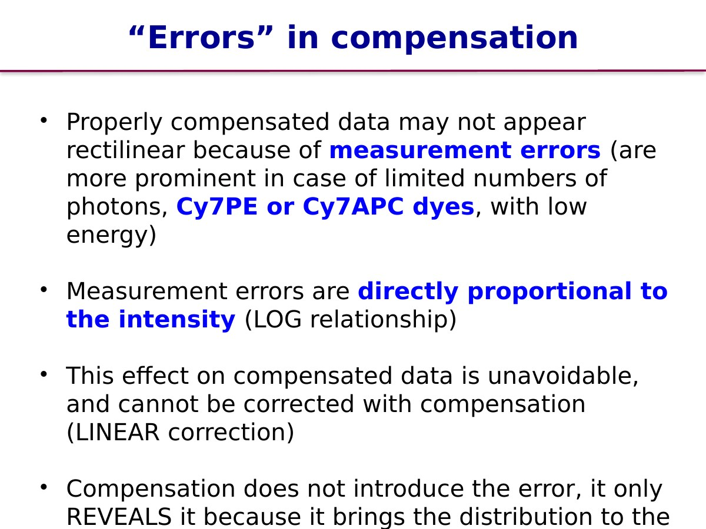
Extracted slide text
“Errors” in compensation • Properly compensated data may not appear rectilinear because of measurement errors (are more prominent in case of limited numbers of photons, Cy7PE or Cy7APC dyes, with low energy) • Measurement errors are directly proportional to the intensity (LOG relationship) • This effect on compensated data is unavoidable, and cannot be corrected with compensation (LINEAR correction) • Compensation does not introduce the error, it only REVEALS it because it brings the distribution to the
Slide 33 — How do we overcome this problem?
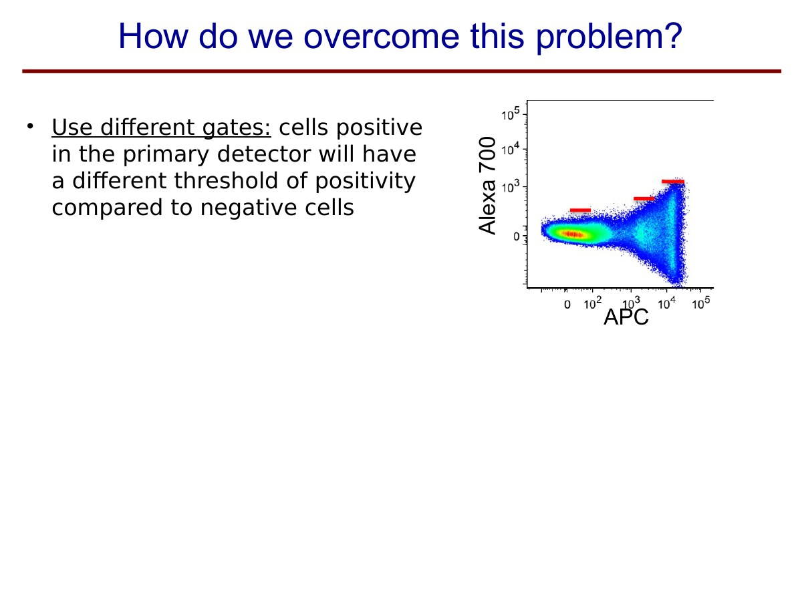
Extracted slide text
How do we overcome this problem?
• Use different gates: cells positive
Alexa 700
in the primary detector will have
a different threshold of positivity
compared to negative cells
APC
Slide 34 — How do we overcome this problem?
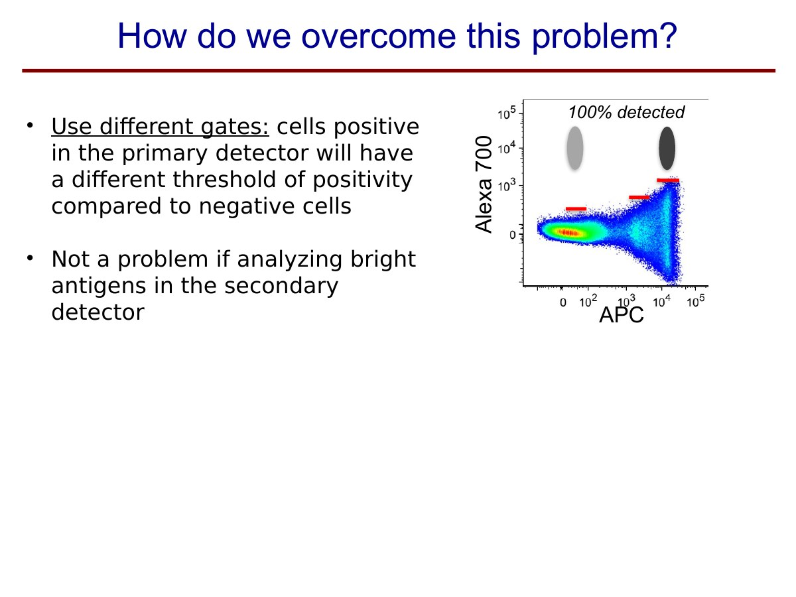
Extracted slide text
How do we overcome this problem?
100% detected
• Use different gates: cells positive
Alexa 700
in the primary detector will have
a different threshold of positivity
compared to negative cells
• Not a problem if analyzing bright
antigens in the secondary
detector APC
Slide 35 — How do we overcome this problem?
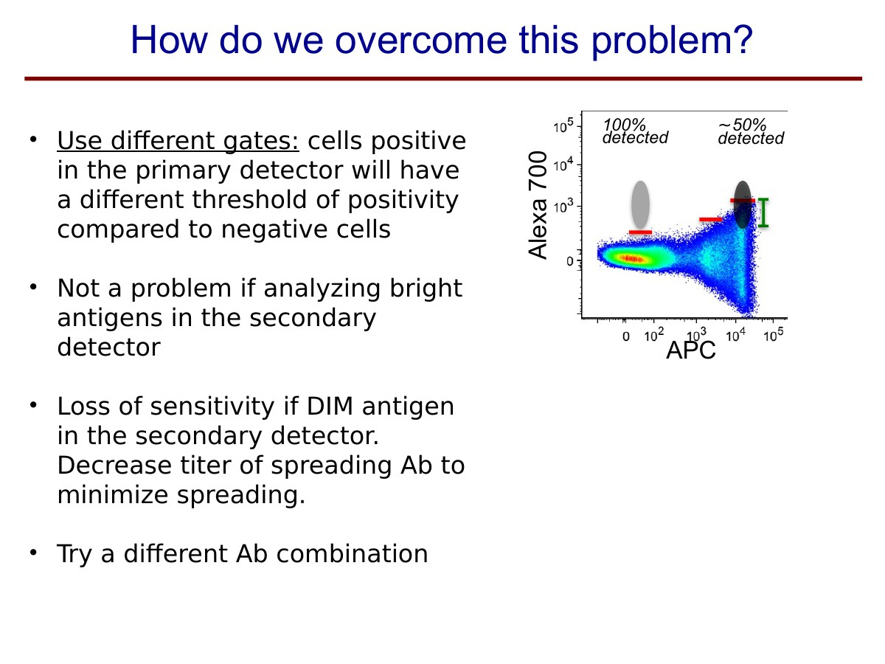
Extracted slide text
How do we overcome this problem?
100% ~50%
• Use different gates: cells positive detected detected
Alexa 700
in the primary detector will have
a different threshold of positivity
compared to negative cells
• Not a problem if analyzing bright
antigens in the secondary
detector APC
• Loss of sensitivity if DIM antigen
in the secondary detector.
Decrease titer of spreading Ab to
minimize spreading.
• Try a different Ab combination
Slide 36 — Final considerations for panel development
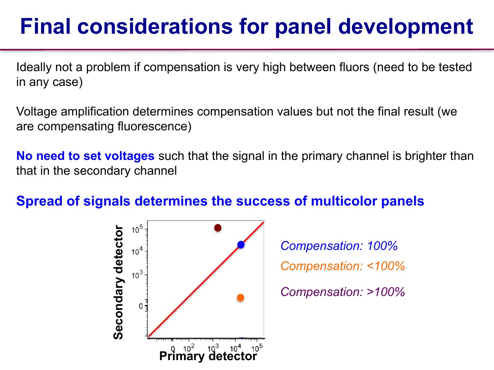
Extracted slide text
Final considerations for panel development
Ideally not a problem if compensation is very high between fluors (need to be tested
in any case)
Voltage amplification determines compensation values but not the final result (we
are compensating fluorescence)
No need to set voltages such that the signal in the primary channel is brighter than
that in the secondary channel
Spread of signals determines the success of multicolor panels
Secondary detector
Compensation: 100%
Compensation: <100%
Compensation: >100%
Primary detector
Slide 37 — Define markers to be used
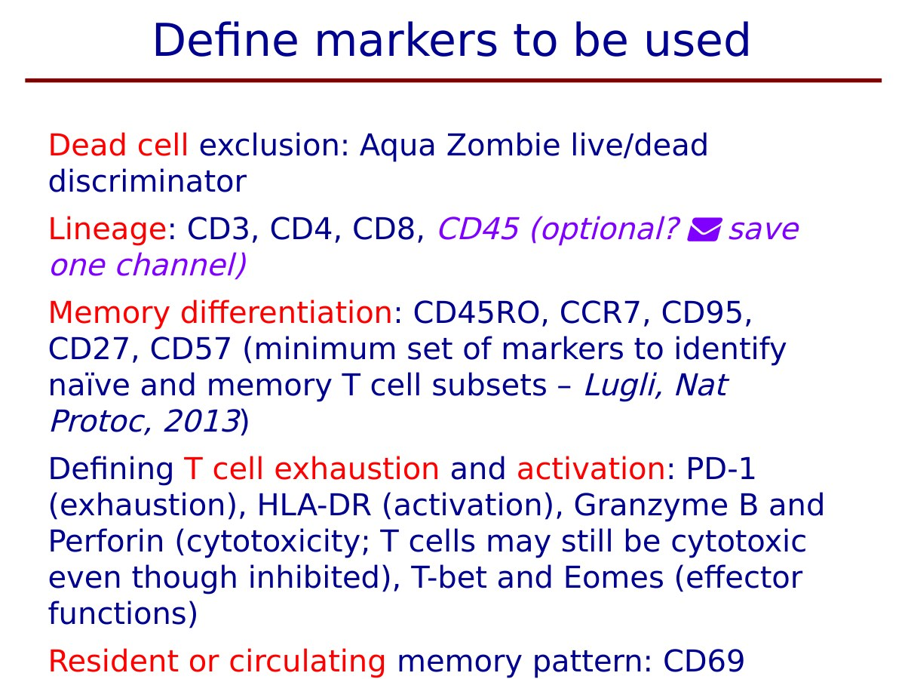
Extracted slide text
Define markers to be used Dead cell exclusion: Aqua Zombie live/dead discriminator Lineage: CD3, CD4, CD8, CD45 (optional? save one channel) Memory differentiation: CD45RO, CCR7, CD95, CD27, CD57 (minimum set of markers to identify naïve and memory T cell subsets – Lugli, Nat Protoc, 2013) Defining T cell exhaustion and activation: PD-1 (exhaustion), HLA-DR (activation), Granzyme B and Perforin (cytotoxicity; T cells may still be cytotoxic even though inhibited), T-bet and Eomes (effector functions) Resident or circulating memory pattern: CD69
Slide 38 — Is this panel going
Extracted slide text
Is this panel going to work?
Slide 39 — It is difficult to predict,
Extracted slide text
It is difficult to predict, especially the future
Slide 40 — Titrate every single reagent
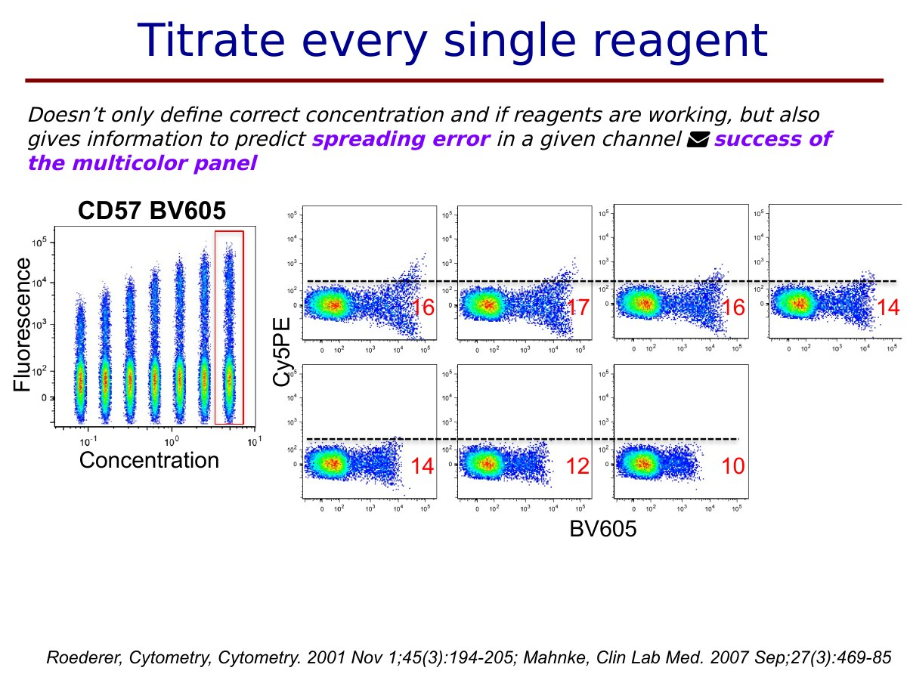
Extracted slide text
Titrate every single reagent
Doesn’t only define correct concentration and if reagents are working, but also
gives information to predict spreading error in a given channel success of
the multicolor panel
CD57 BV605
Fluorescence
16 17 16 14
Cy5PE
Concentration 14 12 10
BV605
Roederer, Cytometry, Cytometry. 2001 Nov 1;45(3):194-205; Mahnke, Clin Lab Med. 2007 Sep;27(3):469-85
Slide 41 — Spillover spreading across all PMTs
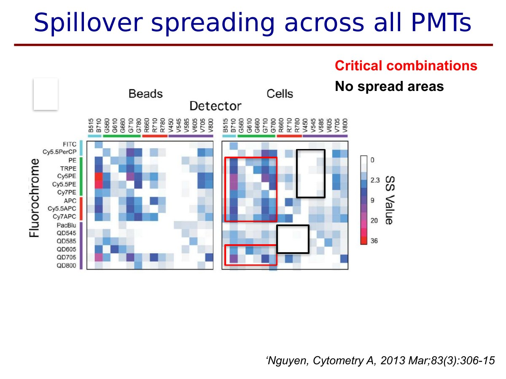
Extracted slide text
Spillover spreading across all PMTs
Critical combinations
No spread areas
‘Nguyen, Cytometry A, 2013 Mar;83(3):306-15
Slide 42 — Choose the best combo
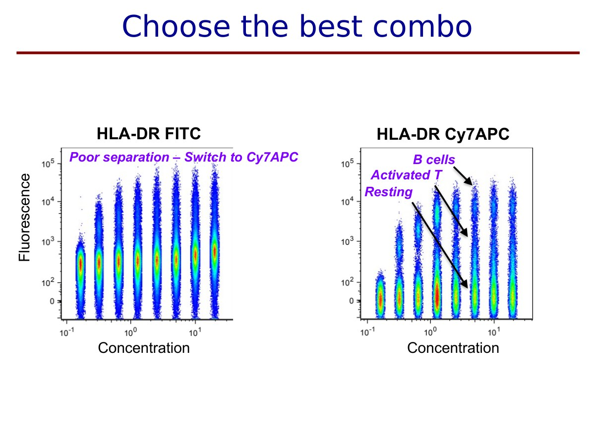
Extracted slide text
Choose the best combo
HLA-DR FITC HLA-DR Cy7APC
Poor separation – Switch to Cy7APC B cells
Activated T
Fluorescence
Resting
Concentration Concentration
Slide 43 — Panel-specific adjustments
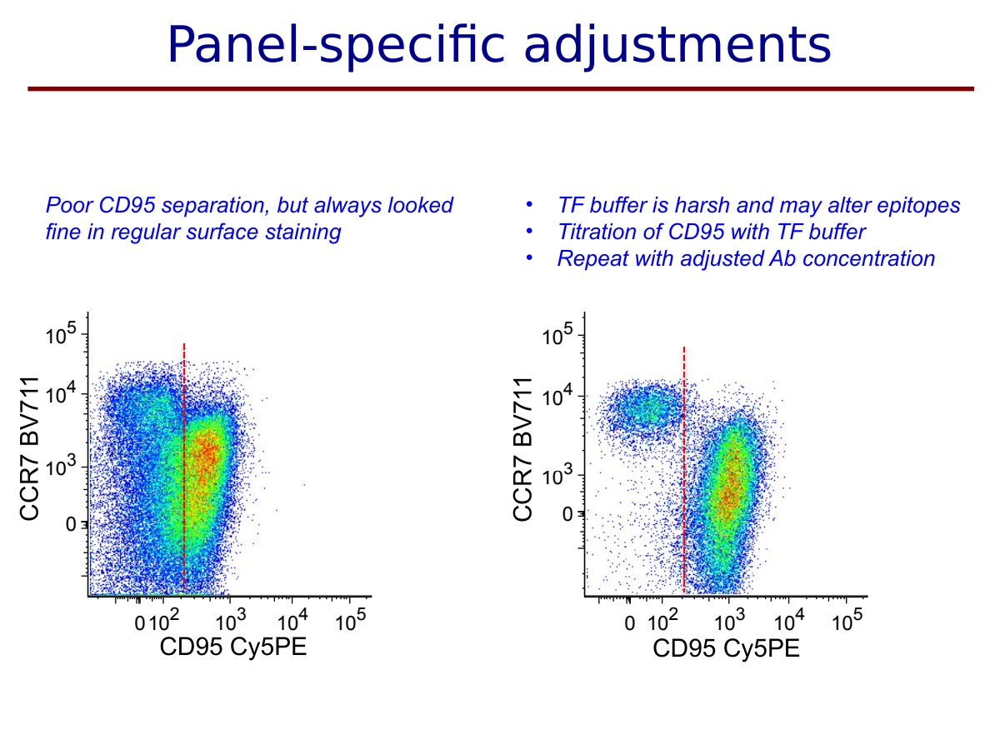
Extracted slide text
Panel-specific adjustments
Poor CD95 separation, but always looked • TF buffer is harsh and may alter epitopes
fine in regular surface staining • Titration of CD95 with TF buffer
• Repeat with adjusted Ab concentration
CCR7 BV711
CCR7 BV711
CD95 Cy5PE CD95 Cy5PE
Slide 44 — Sample-specific adjustments
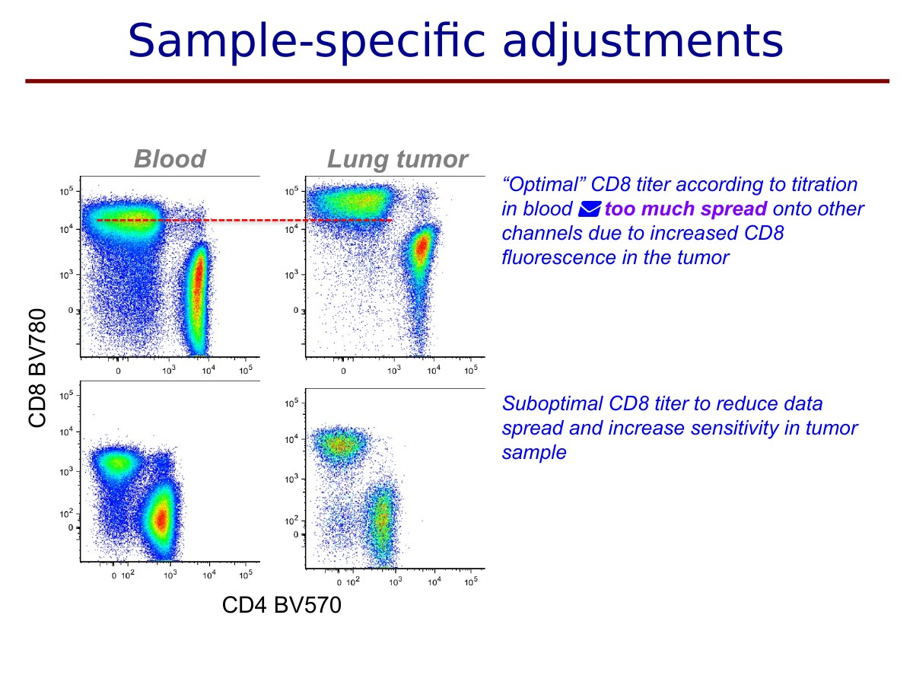
Extracted slide text
Sample-specific adjustments
Blood Lung tumor
“Optimal” CD8 titer according to titration
in blood too much spread onto other
channels due to increased CD8
fluorescence in the tumor
CD8 BV780
Suboptimal CD8 titer to reduce data
spread and increase sensitivity in tumor
sample
CD4 BV570
Slide 45 — Sample-specific adjustments
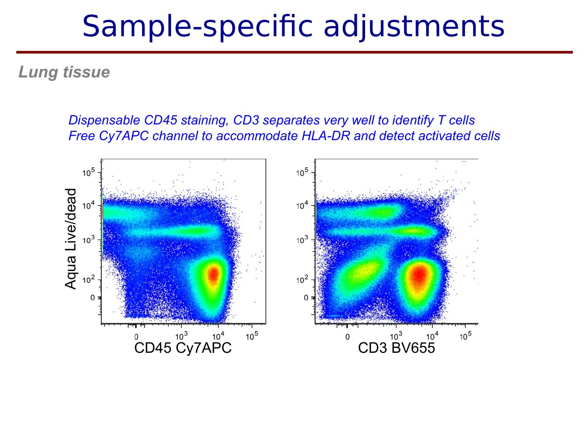
Extracted slide text
Sample-specific adjustments
Lung tissue
Dispensable CD45 staining, CD3 separates very well to identify T cells
Free Cy7APC channel to accommodate HLA-DR and detect activated cells
Aqua Live/dead
CD45 Cy7APC CD3 BV655
Slide 46 — Fluor Antigen Notes
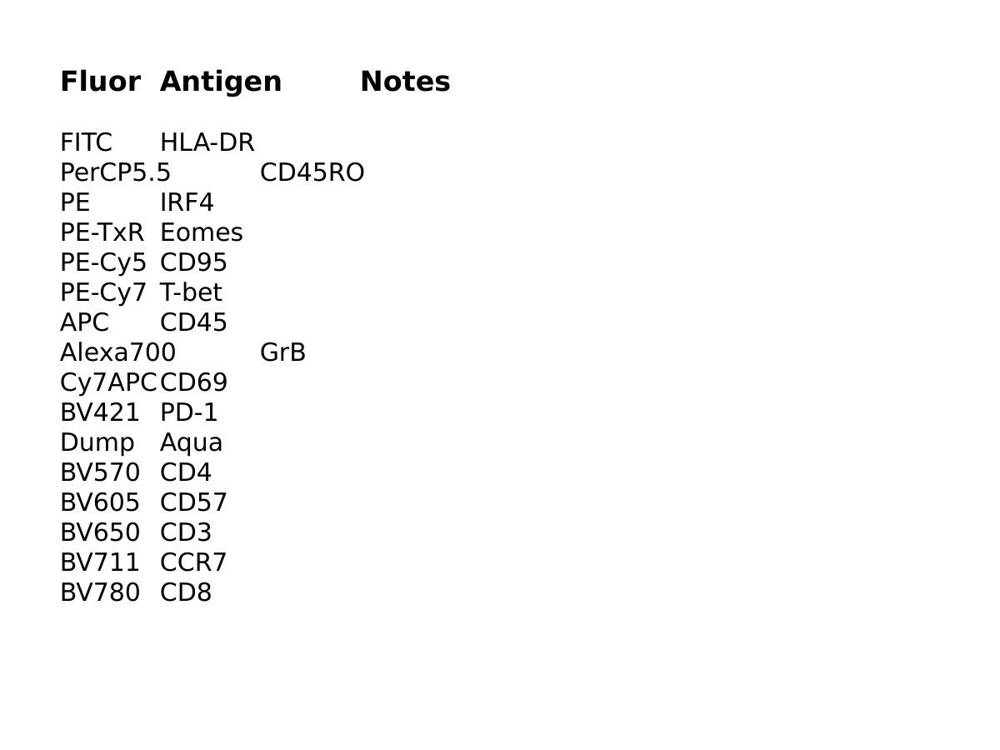
Extracted slide text
Fluor Antigen Notes FITC HLA-DR PerCP5.5 CD45RO PE IRF4 PE-TxR Eomes PE-Cy5 CD95 PE-Cy7 T-bet APC CD45 Alexa700 GrB Cy7APCCD69 BV421 PD-1 Dump Aqua BV570 CD4 BV605 CD57 BV650 CD3 BV711 CCR7 BV780 CD8
Slide 47 — Fluor Antigen Notes
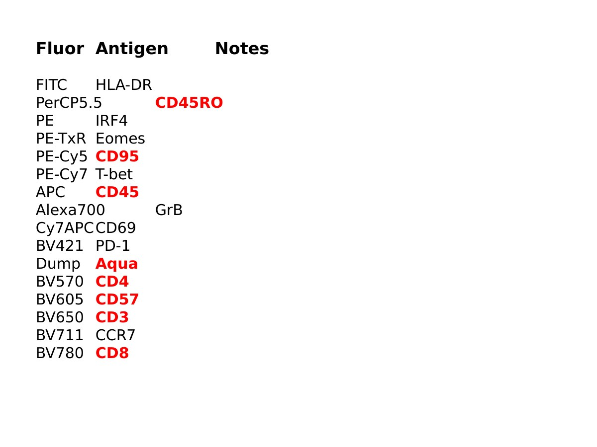
Extracted slide text
Fluor Antigen Notes FITC HLA-DR PerCP5.5 CD45RO PE IRF4 PE-TxR Eomes PE-Cy5 CD95 PE-Cy7 T-bet APC CD45 Alexa700 GrB Cy7APCCD69 BV421 PD-1 Dump Aqua BV570 CD4 BV605 CD57 BV650 CD3 BV711 CCR7 BV780 CD8
Slide 48 — Fluor Antigen Notes
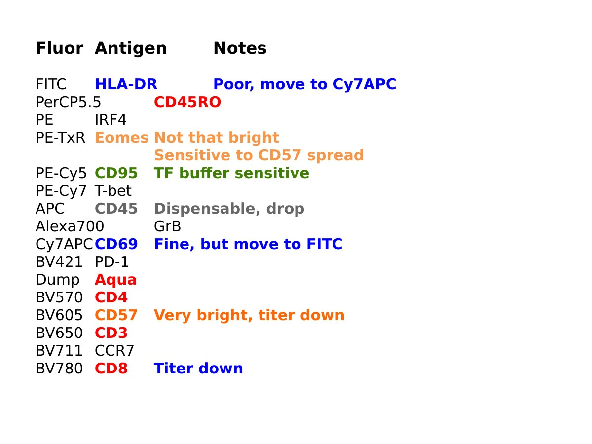
Extracted slide text
Fluor Antigen Notes
FITC HLA-DR Poor, move to Cy7APC
PerCP5.5 CD45RO
PE IRF4
PE-TxR Eomes Not that bright
Sensitive to CD57 spread
PE-Cy5 CD95 TF buffer sensitive
PE-Cy7 T-bet
APC CD45 Dispensable, drop
Alexa700 GrB
Cy7APCCD69 Fine, but move to FITC
BV421 PD-1
Dump Aqua
BV570 CD4
BV605 CD57 Very bright, titer down
BV650 CD3
BV711 CCR7
BV780 CD8 Titer down
Slide 49 — Fluor Antigen Notes Operations
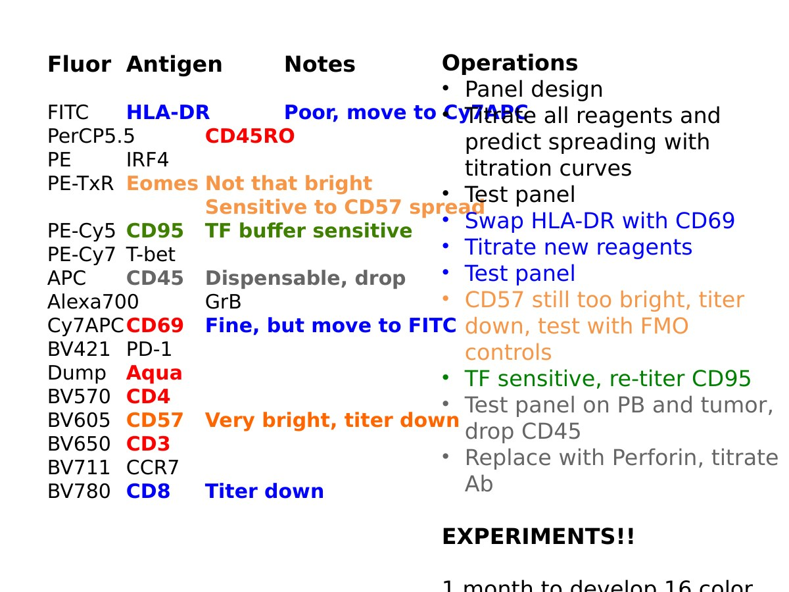
Extracted slide text
Fluor Antigen Notes Operations
• Panel design
FITC HLA-DR Poor, move to •Cy7APC
Titrate all reagents and
PerCP5.5 CD45RO predict spreading with
PE IRF4 titration curves
PE-TxR Eomes Not that bright
• Test panel
Sensitive to CD57 spread
PE-Cy5 CD95 TF buffer sensitive
• Swap HLA-DR with CD69
PE-Cy7 T-bet • Titrate new reagents
APC CD45 Dispensable, drop • Test panel
Alexa700 GrB • CD57 still too bright, titer
Cy7APCCD69 Fine, but move to FITC down, test with FMO
BV421 PD-1 controls
Dump Aqua • TF sensitive, re-titer CD95
BV570 CD4 • Test panel on PB and tumor,
BV605 CD57 Very bright, titer down
drop CD45
BV650 CD3
BV711 CCR7
• Replace with Perforin, titrate
BV780 CD8 Titer down Ab
EXPERIMENTS!!
Slide 50 — Fluor Antigen Notes Final panel
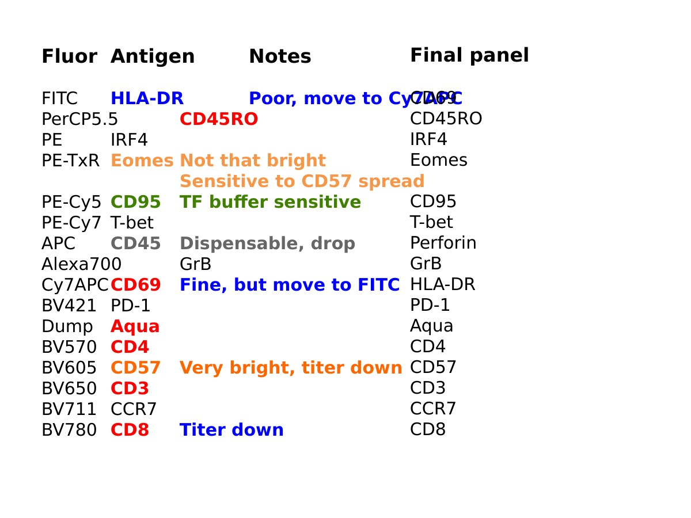
Extracted slide text
Fluor Antigen Notes Final panel
FITC HLA-DR CD69
Poor, move to Cy7APC
PerCP5.5 CD45RO CD45RO
PE IRF4 IRF4
PE-TxR Eomes Not that bright Eomes
Sensitive to CD57 spread
PE-Cy5 CD95 TF buffer sensitive CD95
PE-Cy7 T-bet T-bet
APC CD45 Dispensable, drop Perforin
Alexa700 GrB GrB
Cy7APCCD69 Fine, but move to FITC HLA-DR
BV421 PD-1 PD-1
Dump Aqua Aqua
BV570 CD4 CD4
BV605 CD57 Very bright, titer down CD57
BV650 CD3 CD3
BV711 CCR7 CCR7
BV780 CD8 Titer down CD8
Slide 51 — 20-parameter FACS
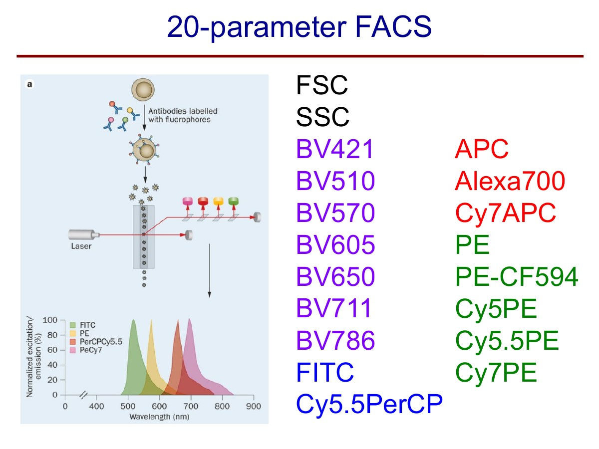
Extracted slide text
20-parameter FACS
FSC
SSC
BV421 APC
BV510 Alexa700
BV570 Cy7APC
BV605 PE
BV650 PE-CF594
BV711 Cy5PE
BV786 Cy5.5PE
FITC Cy7PE
Cy5.5PerCP
Slide 52 — Moving towards 50 parameter
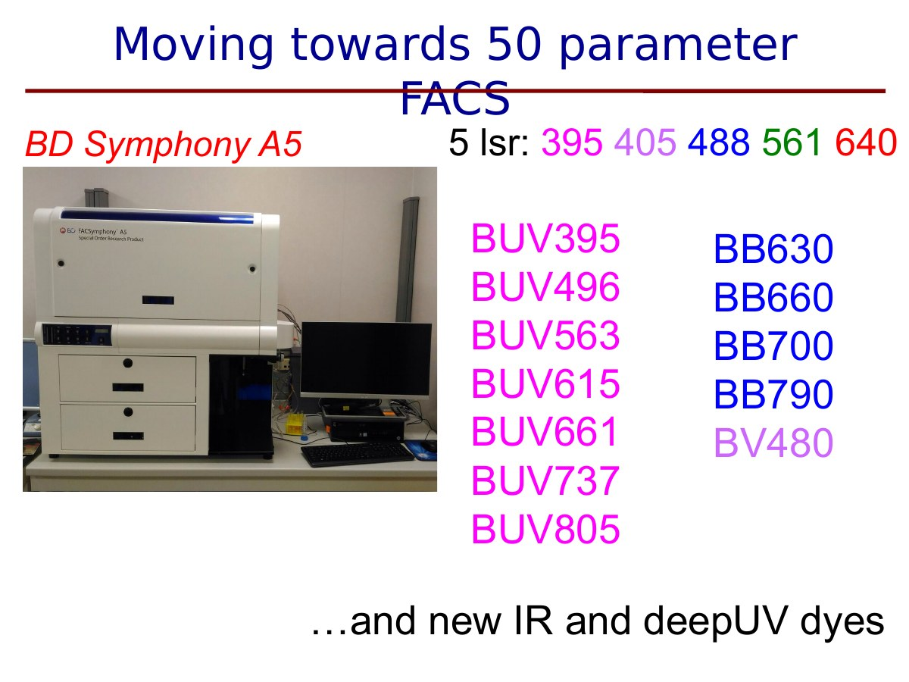
Extracted slide text
Moving towards 50 parameter
FACS
BD Symphony A5 5 lsr: 395 405 488 561 640
BUV395 BB630
BUV496 BB660
BUV563 BB700
BUV615 BB790
BUV661 BV480
BUV737
BUV805
…and new IR and deepUV dyes
Slide 53 — A new Age of Enlightenment in
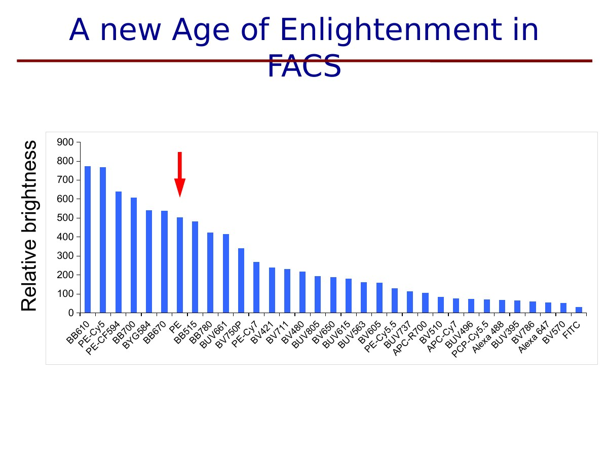
Extracted slide text
A new Age of Enlightenment in
FACS
900
Relative brightness
800
700
600
500
400
300
200
100
0
0 5 4 0 4 0 E 5 0 1 P 7 1 1 0 5 0 5 3 5 .5 7 0 0 7 6 .5 8 5 6 7 0 C
B 61 -Cy F59 B70 58 B67 P B51 B78 V66 750 -Cy V42 V71 V48 V80 V65 V61 V56 V60 y5 V73 70 V51 -Cy V49 y5 48 V39 V78 64 V57 FIT
B P E -C B Y G B B B U BV PE B B B U B U U B E-C U C-R B PC U P-C exa U B exa B
B B B B B B P B C Al B Al
PE P A A
P
Slide 54 — Flow cytometry data
Extracted slide text
Flow cytometry data presentation
Slide 55 — A call for data integrity in FACS
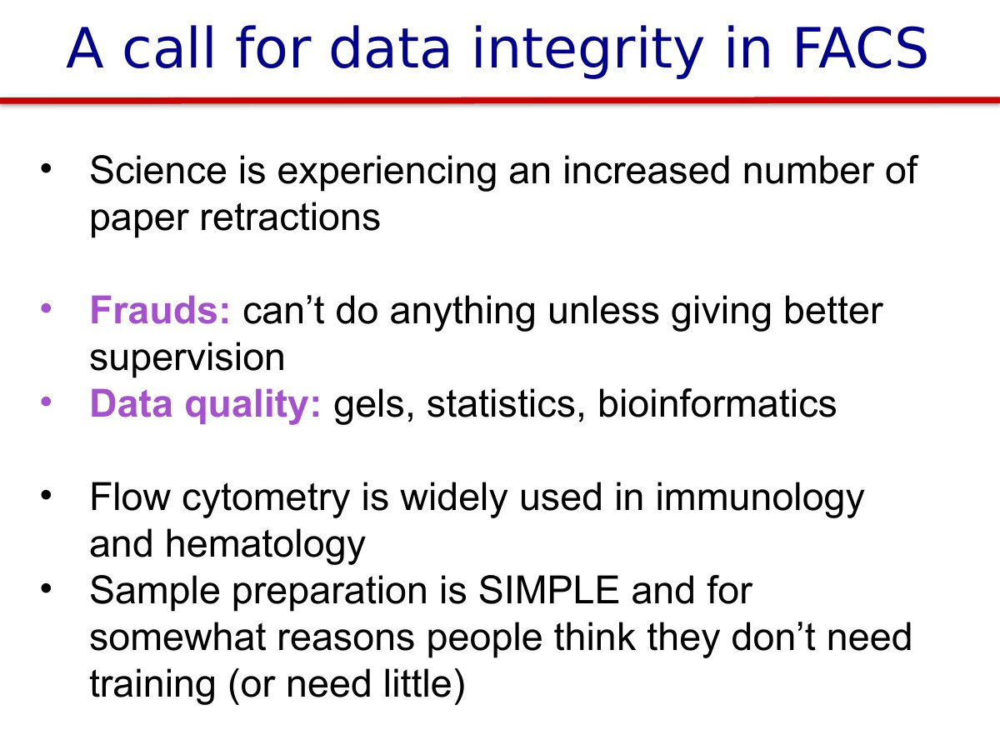
Extracted slide text
A call for data integrity in FACS • Science is experiencing an increased number of paper retractions • Frauds: can’t do anything unless giving better supervision • Data quality: gels, statistics, bioinformatics • Flow cytometry is widely used in immunology and hematology • Sample preparation is SIMPLE and for somewhat reasons people think they don’t need training (or need little)
Slide 56 — Introducing artifacts in flow cytometry
Extracted slide text
Introducing artifacts in flow cytometry • Instrument setup and calibration (PMT voltage generally dependent on the mood of the operator) • Reagent titration: high background, little separation • COMPENSATION • CONTROLS (define positivity)
Slide 57 — Some papers rely heavily on FACS
Extracted slide text
Some papers rely heavily on FACS
Slide 58 — Some papers rely heavily on FACS
Extracted slide text
Some papers rely heavily on FACS
SHOW ME THE
DATA !
Slide 59 — Questions arising
Extracted slide text
Questions arising
• Were the data compensated correctly?
• And the gating? Same gates used for all patients/controls?
• Were antibodies titrated?
• How many cells were acquired? Treg cells are ~5% of
CD4+, transplanted people are lymphopenic. Methods can
report 1,000,000 cells were acquired – but what if the
frequency of total CD3+ is 1%?
Cannot tell if raw data are not provided
Slide 60 — Outline
Extracted slide text
Outline • Data display methods • Dot vs. density plot vs. contour • Gating strategy • Type of gating
Slide 61 — Avoid histograms (or be careful)
Extracted slide text
Avoid histograms (or be careful)
Histograms are very intuitive but display only one
parameter (we now live in a multicolor world)
88.1
Under
compensated
CD4
77.8
Correctly
compensated
CCR7 CCR7
Slide 62 — Dot vs. density plot vs. contour
Extracted slide text
Dot vs. density plot vs. contour
Multiple ways to display data – use depends on
applications
Color Contour
CCR7
Density Dot
CD45RA
Slide 63 — Saturated areas by events
Extracted slide text
Saturated areas by events
Number of events
50,000 150,000 300,000 300,000
CCR7
CD45RA
Slide 64 — Dots are useful with low numbers
Extracted slide text
Dots are useful with low numbers
PBMCs were stimulated with pool of peptides to induce cytokine
production (identification of ag-specific T cells)
Determine the memory phenotype of cytokine producing cells
Unstimulated Peptide stimulated
IFN-g
IL-2
Slide 65 — Dots are useful with low numbers
Extracted slide text
Dots are useful with low numbers
High resolution Low resolution
(can’t see anything) (better, but gates?)
CCR7
No idea of number of events
CD45RA
Slide 66 — Dots are useful with low numbers
Extracted slide text
Dots are useful with low numbers
Total CD8+
Ag-specific
Dots overlaid on density plot
• Contrasting colors
• Total CD8+ cells allow to see population distribution
Slide 67 — Complex experiments: gating strategy
Extracted slide text
Complex experiments: gating strategy
Why is this important? Tells you whether:
• the authors have experience with FACS
• gates were performed correctly (polygon vs. quadrants as
a consequence of spreading)
• Dead cells were excluded in the right way
• There is contamination from unwanted populations
• Cells were chosen correctly on the basis of FSC and SSC
Slide 68 — Memory T cells: full gating strategy
Extracted slide text
Memory T cells: full gating strategy
Is fluorescence Spreading of
stable over CD8 into CD4:
time? Dead cells optimal gate?
Doublets excluded
excluded? correctly? Only small
Contaminating lymphocytes or
populations also large
such as lymphocytes
Monos? included?
Slide 69 — MIFlowCyt – ISAC standards for data display
Extracted slide text
MIFlowCyt – ISAC standards for data display
Slide 70 — Untitled slide
Slide 71 — enrico.lugli@humanitasresearch.it
Extracted slide text
enrico.lugli@humanitasresearch.it